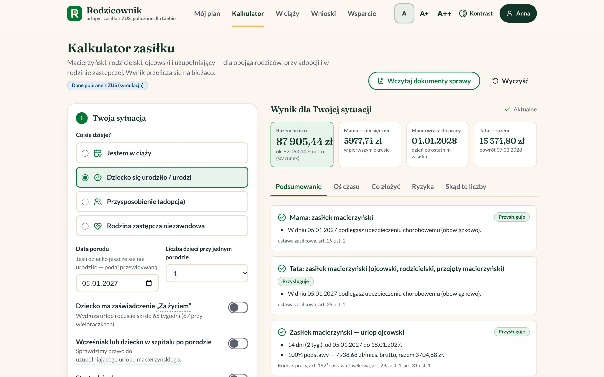

KN Solvro
ZUS × HackNation 2026
Kalkulator · wymagania b–f, j
Jeden kalkulator na
każdą
sytuację

1
Urodzenie, adopcja,
rodzina zastępcza
2
„Za życiem”, wieloraczki,
praca na część etatu
3
Każda kwota z podstawą prawną